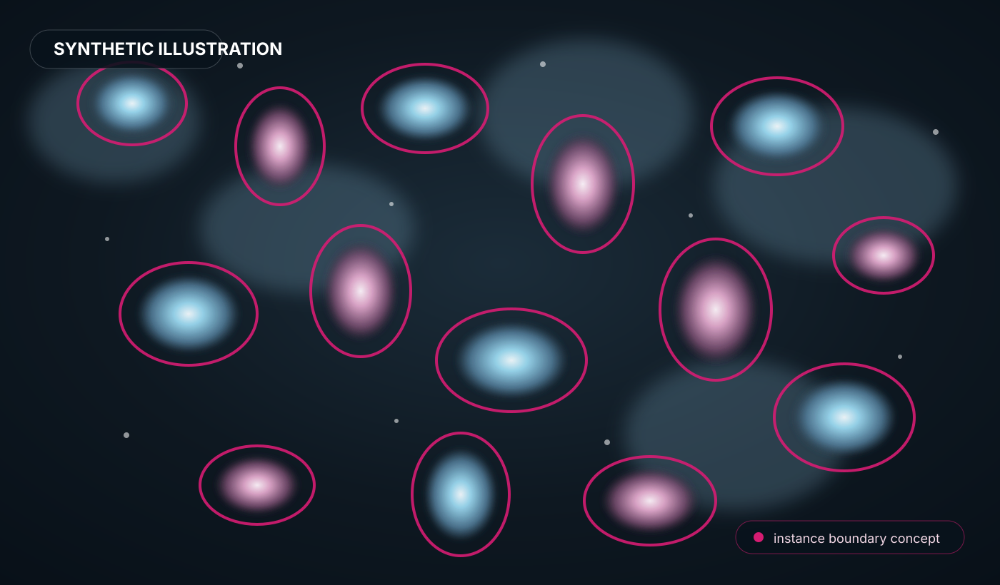

01 · Input
ND2 or TIFF
Use supported Nikon ND2 or TIFF microscopy data. Multidimensional ND2 selections are recorded explicitly.
BioNuclei turns fluorescence microscopy into an inspectable nuclear analysis. Upload supported imaging data in the Lab; the released workflow segments nuclei, derives measurements, lets you explore the returned evidence, and packages a reproducible report.

BioNuclei remains intentionally narrow: nuclear instance segmentation and quantitative measurements for fluorescence bioimaging, with an interactive review layer inspired by proven bioimage-analysis workflows.
Use supported Nikon ND2 or TIFF microscopy data. Multidimensional ND2 selections are recorded explicitly.
A convolutional segmentation model predicts background, nuclear interior, and boundary information.
Get labelled nuclear instances, geometric and intensity measurements, visual overlays, structured results, and provenance.
A completed analysis can be explored in the Lab through a measurement-aware viewer, per-nucleus table, spatial ROI summary and quantitative heatmap controls.
Inspect the analyzed overlay and segmentation mask before interpreting measurements.
Work with explicit per-nucleus instances and centroids rather than a single aggregate count.
Review area, circularity, eccentricity, fluorescence intensity and centroid coordinates.
Draw a temporary ROI and inspect the nuclei and summary statistics inside it.
The interactive layer does not replace the scientific pipeline. It exposes its outputs so a scientist can inspect what was actually computed.
Open the LabThe current scientific model is a compact Boundary U-Net. The adaptive layer can inspect the acquisition and route a validated workflow; it does not silently change the model weights.
After inference, each specialist reviewer receives the computed QC, segmentation, morphology, intensity and spatial outputs for this job. Quantitative claims link to exact result paths and are checked before publication.
Reads format, dimensions, dtype, intensity statistics, and acquisition metadata.
Selects only an analysis profile that is actually available and validated.
Flags measurable input problems and interprets segmentation evidence conservatively.
Explains what ran, what was measured, what warnings occurred, and what files were produced.
Scientific boundary: deterministic reviewers summarize computed evidence; the CNN predicts; BioNuclei code computes measurements. These outputs do not establish a biological mechanism or diagnosis.
A completed analysis is packaged so a scientist can inspect the image, explore object-level measurements, review spatial patterns, and trace the computation.
Analyzed overlay, instance-labelled segmentation, and measurement-aware review.
Open the Lab, choose an access mode, upload a supported ND2 or TIFF, inspect the returned evidence, download the report, and delete the transient job.
Open the Lab →